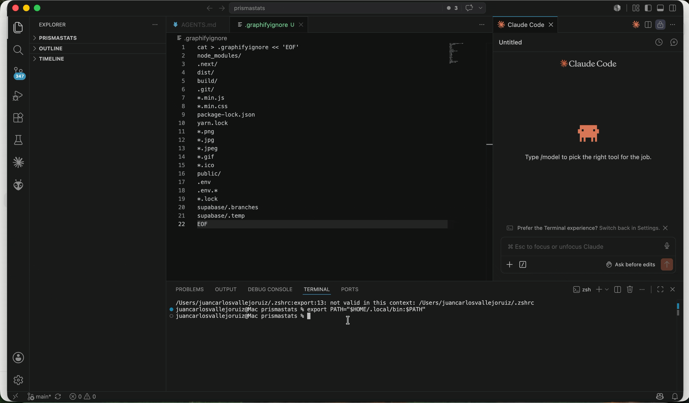

// the problem
graphify maps your entire codebase into a knowledge graph. Great. But injecting every node into every query is wasteful — your LLM spends most of its context budget on nodes it'll never use.
slurp scores each node against your query using PageRank + TF-IDF — zero LLM calls, zero extra tokens spent — and serves only what fits inside your budget.
Benchmark: PrismaStats codebase · 2,111 nodes · "player stats" query
// benchmark
PrismaStats: 2,111 nodes, 69,418 tokens. No mocks.
| Query | Budget | Tokens used | Full graph | Saved |
|---|---|---|---|---|
| "auth flow" | 2,000 | 2,000 | 69,418 | 97.1% |
| "player stats" | 4,000 | 4,000 | 69,418 | 94.2% |
| "database schema" | 8,000 | 8,000 | 69,418 | 88.5% |
// zero dependencies
slurp index analyzes your codebase using pure static analysis — no LLMs, no external APIs, zero cost. Python uses the ast stdlib, TypeScript/JS uses tree-sitter, Go uses a regex parser.
Run it once and start querying immediately. No accounts, no API keys, no cloud.
// demo
The interactive visualizer shows the subgraph slurp selected — and how much you saved.

slurp "auth flow" --graph graphify-out/graph.json --budget 4000 --viz
Opens an interactive subgraph explorer with a live token-savings badge.
// how it works
One command, no dependencies beyond Python.
slurp index . analyzes your code with pure static analysis — no LLMs, no APIs, no cost.
Add slurp to your .mcp.json. Claude Code calls it automatically on every query.
Already using graphify? slurp works with your existing graph.json out of the box.
// features
slurp index
Zero dependencies. No APIs. No cost.
MCP server
Configure once. Claude Code handles the rest.
--viz
Interactive subgraph explorer
slurp diff
Compare graph snapshots
slurp benchmark
Measure token savings
--inject-code
Attach source code to nodes